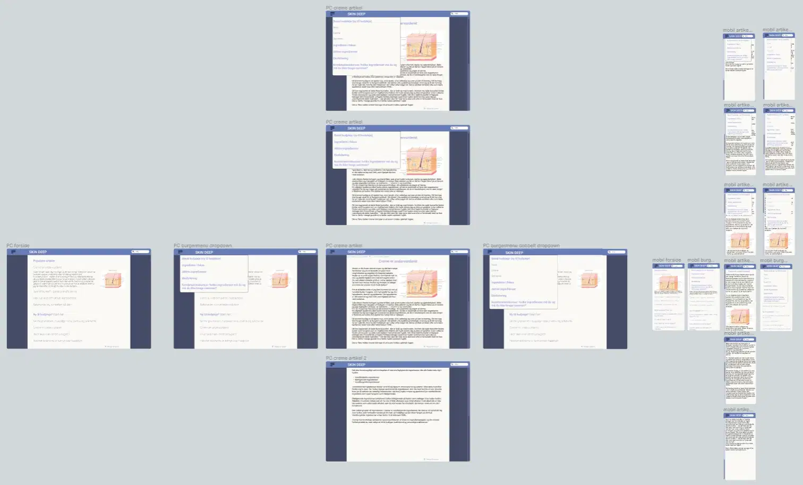

Bag om Cremekrukken
Om forløbet
Formålet med forløbet var at introducere os til User Experience (UX) og User Interface / Brugergrænseflader (UI) så vi kunne lave mere brugerorienteret design. Vi blev introduceret til møder at arbejde med UX i form af indsamling af data og udførelse at tests. Til UI-delen lærte vi om webkonventioner, der sikrer at brugere finder en hjemmeside overskuelig og intuitiv at anvende. Det var således meningen at vores hjemmeside skulle bygge på et behov fra brugere og designet til disse brugere fremfor at bygge på en tilfældig idé.
Emne og Formål med Hjemmesiden:
Til hjemmesiden skulle vi selv komme frem til en idé samt et formål for brugerne. Jeg valgte at siden skulle være informativ og at typen er en blog, der fokuserer på forskningsbaseret hudpleje og henvender sig til begyndere og entusiaster, primært kvinder. Målet er at levere evidensbaseret information om hudpleje med fokus på at uddanne brugerne om deres hud og evidensbaseret pleje.
Kilder og Inspiration:
Efter at være kommet frem til min idé var det nu tid til at undersøge om den gav mening i praksis. Til at starte med lavede jeg deskresearch hvor jeg indhentede inspiration fra forskellige kilder, herunder skønhedsmagasiner, skønhedsbloggere såsom Pudderdåserne og Holy Snails, og videnskabelige forklaringer på skønhed fra Lab Muffin Beauty Science. Efter at have udført min deskresearch var det tid til at undersøge om formålet med websiden også ville give mening for mine tiltænkte brugere.
Målgruppeanalyse:
Observation:
Til at undersøge min målgruppe indsamlede jeg kvalitativt data i form af observation og interview. Formålet var efter at have undersøgt lignende websiteløsninger, hvordan en potentiel bruger ville gøre ved indkøb af hudpleje. Jeg observerede min far, som er en begynder inden for hudpleje. Jeg observerede ham imens han forsøgte at købe en fugtighedscreme til tør hud. Under observationen udviste han frustration under læsningen af en lang artikel om hudpleje han fandt på Matas, hvor han scrollede op og ned for til sidst at give op.
Interview:
Derefter foretog jeg et semistruktureret interview med min far, der fokuserede på hans beslutningsproces ved køb af en creme til tør hud (se observationsafsnit). Interviewet afslørede frustration over overflod af information, forvirring over hudplejeterminologi (såsom serum), og ønsket om mere enkle, ikke-markedsorienterede ressourcer.
Vigtigste Konklusioner:
- Mangel på ikke-markedsorienterede online ressourcer til hudplejeinformation.
- Overvældende information kan føre til forvirring for begyndere.
- Brugere foretrækker fokuseret indhold med en klar besked i hudplejeartikler.
Hjemmeside Tilgang:
Jeg valgte på baggrund af mine undersøgelser at tilpassede den oprindelige idé fra en omfattende blogpost til at have fokus på én hovedpointe af gangen. Hjemmesiden har til formål at udfylde hullet i tilgængelig, evidensbaseret hudplejeinformation for begyndere og entusiaster og guide brugerne til at forstå hudplejeingredienser og træffe valg på et oplyst grundlag. Formålet med min hjemmeside fremgår af mit storyboard som hjalp mig med visuelt at få repræsenteret det scenarie, hvor en kunde anvender mit website.
Fra idé til design
Stilvalg
Ud over at undersøge min idé om at lave en blog om evidensbaseret hudpleje dannede jeg mig også et visuelt overblik over hvordan jeg ønskede siden skulle se ud. Siden der var tale om en blog der havde fokus på researchbaseret information syntes jeg det var vigtigt at hjemmesiden fremstod professionel og seriøs. Med dette i mente valgte jeg stikordene simpel, rolig og elegant til mit moodboard. Da jeg efter at have lavet et moodboard og research omkring mine brugere skulle jeg omsætte mine idéer til et styltile, hvor jeg valgte en simpel, rolig og elegant stil med en farvepalette, der består af dæmpede lilla og blå nuancer, mens jeg sikrer læsevenlighed med skrifttypen Roboto. Med #191308 som en mørk erstatning for sort og #FAF9F6 som en lys farve forsøger jeg at skabe kontrast og letlæselighed (det viste sig dog senere hen at kontrasten var lidt for lav ifølge min Lighthouse-test).
Layout
Efter at have fastlagt mit stilvalg kørte jeg videre til layout. Her startede jeg med at lave crazy 8's og derefter solutionsketch. Disse mundede ud i en mobil og desktop wireframe. Herudover anvendte jeg teori om UI i form af webkonventioner for at sikre, at mit design var intuitivt at forstå og nemt navigere rundt i. Placeringen af søgefunktionen og menuen følger konventioner for brugervenlighed, og forsiden er organiseret med både mest populære og nyeste artikler. Burgermenuen prioriterer en indgang til grundlæggende hudplejetips, og håbet er, at brugere nemt kan finde indhold via menuen. Overordnet er formålet med stilen, at den skal fremstå professionel og tiltænkt at gøre navigationen let for de besøgende på bloggen. Det blev disse wireframes samt min styletile, der dannede grundlag for den efterfølgende protype jeg lavede i Figma.
Test af prototype
Testresultater
For at teste brugervenligheden for min prototype fik jeg min mor til at teste siden af. Hun var lidt forvirret over at Figma ikke var en hjemmeside, men efter jeg fik forklaret det, bad jeg hende om at finde og læse artiklen. Hun testede også knapperne af. Hun syntes der var for lidt mellemrum mellem teksten i boksen til at man kunne klikke på dem nemt på mobil (jeg har touchskærm så hun testede med touch på mobilprototypen). Dette var jeg obs på, da vi skulle i gang med at kode siden. Hun syntes billedet til artiklen var ubehageligt at se på, så jeg valgte at bruge et andet billede der stadig illustrerede hudens lag, men ikke så så grafisk ud det havde den positive effekt, at der kun var de mest nødvendige ting i det endelige billede jeg tegnede.

Præsentation
Process
Jeg lavede først en tekst for præsentationen så jeg havde et overblik over hvor mange ord det fyldte samt hvilken rækkefølge jeg ville tale om. Så læste jeg det igennem igen efter jeg havde printet det ud og lavede kommentarer til mig selv. Til sidst lavede jeg det om til stikord som jeg øvede mig ud fra. (Til højre set et slide fra mit TIDLIGGERE slideshow).
Refleksion
Fremover vil jeg straks fotografere mine sketches for at undgå at miste mit storyboard. Under oprettelsen af styletile vil jeg integrere farvetjek i Lighthouse-siden som en velovervejet del af designprocessen. Efter pitchen vil jeg følge anbefalingen om at bruge PowerPoint eller Google Slides til mine slides og forbedre tidsfordelingen. Kodningsmæssigt burde jeg have startet med at gøre siderne visuelt tiltalende før integration af diverse funktioner. Jeg vil stræbe mig på at dokumentere fejl i kodning med screnshots undervejs.